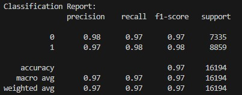
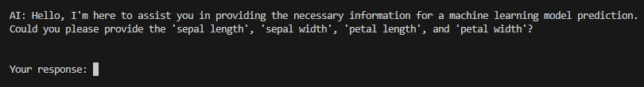
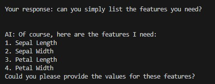
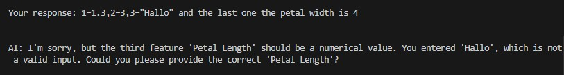
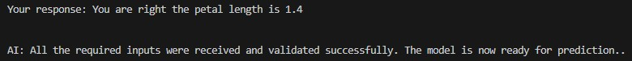
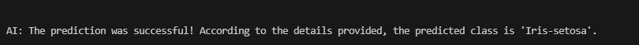

Project 2: Interactive Machine Learning Predictions with LLM Integration
Results
The solution successfully enables users to obtain machine learning predictions through interaction with an LLM.
Model Creation
The Decision Tree (DT) model was built using the dataset Iris Dataset from UCI:
- All parameters where kept to the default parameters set for the model creation layer which can be found in the python of Part 1.
- The Decision Tree (DT) model achieved an accuracy of 97.8% (Accuracy Measurement: 0.9777777777777777).
Following the Classification Report for the Decision Tree (DT) model:
User Journey
STEP 1 - The user will be greeted by the LLM including information about what it wants to achieve and what it requires from the user. The specific field values are not hardcoded but retrieved from the feature_template.json file created during model creation which makes this part more dynamic and allowes to introduce new ML models easily without adjustment to the orchestrator:
STEP 2 - Once the user provides an input the he LLM will process it always trying to focus on its main goal of creating a meaningful JSON body for the ML prediction:
STEP 3 - In case the user does not provides wrong information (wrong format, wrong features etc.) the LLM will ask the user for correction:
STEP 4 - Once all required information has been provided to the LLM it will return the correct body and flag it for prediction processing which will be done via the Orchestration Layer:
STEP 5 - The prediction will be returned to the LLM with the instructions to create a final answer for the user. If an error appears the LLM will act accordingly and inform the user as well:
Conclusion and Outlook
In summary, this project demonstrates the utility of integrating Large Language Models (LLMs) to orchestrate feature engineering by:
- Gathering appropriate data: Leveraging the LLM's conversational capabilities to interact with the user and obtain the necessary information.
- Formatting data correctly: Ensuring the data aligns with the requirements of the machine learning model.
This proof of concept (PoC) serves as a foundational step in showcasing how such an integration can function effectively. The following improvements and extensions could significantly enhance its usability and scalability:
- Enhanced Error Handling: Introducing more robust mechanisms to handle errors across the entire pipeline—from user interaction with the LLM to data validation and ML predictions.
- Model-Agnostic Orchestration: Expanding the solution to work with multiple machine learning models and multiple predictions at once (predict a full list of input values not only one row). This would involve querying the user about the type of prediction required and dynamically selecting the appropriate model and preparing the relevant data.
- User-Friendly Interface: Developing a graphical user interface (GUI) or web-based application to replace the console-based interaction, making it accessible to non-technical users.
- Advanced Model Setup: Utilizing LLM-guided assistance for building and fine-tuning machine learning models. This could include suggesting hyperparameters, data transformations, and even challenging predefined configurations for optimized results.
- Enhanced User Experience: Gathering additional information about the data and prediction goals during model creation could help the LLM to better understand the machine learning layer and therefore ask bettter questions while also increasing feature engineering capabilities (Feature Definition, Data Descriptions etc.).